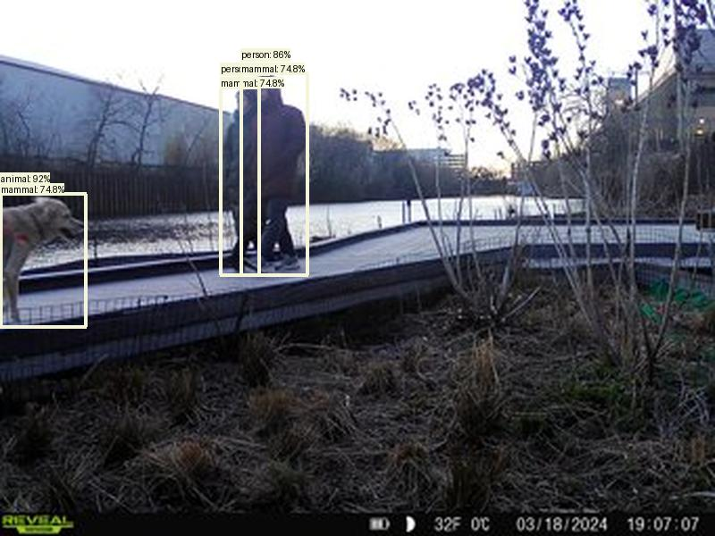

Result type: detections_animal_person, image: images/batch_2/2024-03-23_WildMileNorth--SYFW1837.JPG, max conf: 0.828
Result type: detections_animal_person, image: images/batch_2/2024-03-23_WildMileNorth--SYFW2236.JPG, max conf: 0.761

Result type: detections_animal_person, image: images/batch_2/2024-03-23_WildMileNorth--SYFW2238.JPG, max conf: 0.941

Result type: detections_animal_person, image: images/batch_2/2024-03-23_WildMileNorth--SYFW2290.JPG, max conf: 0.917
Result type: detections_animal_person, image: images/batch_2/2024-04-13_ZoneD--PICT0208.JPG, max conf: 0.921

Result type: detections_animal_person, image: images/batch_4/2024-05-12_Prologis--SYEW0353.JPG, max conf: 0.843

Result type: detections_animal_person, image: images/batch_9/2024-06-27_UR011--SYFW0404.JPG, max conf: 0.746